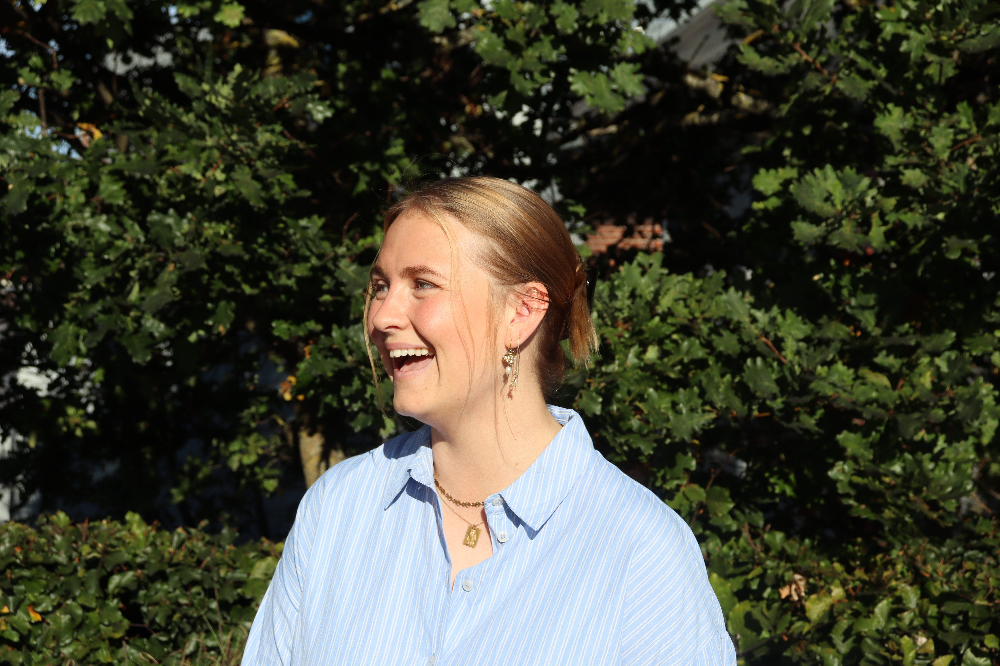

Hvem er jeg?
Jeg hedder Ditte, jeg har valgt at blive multimediedesigner, fordi jeg elsker at fortælle historier og budskaber gennem visuelle valg. I 2024 boede jeg et år i Los Angeles hos en amerikansk/canadisk familie, hvor begge forældre arbejdede i mediebranchen. Mediedesign fylder alt derovre og man ser det overalt, så det var en stor inspiration for mig til at gå medievejen.
Som 13-14 årig boede jeg et år i Spanien, hvor jeg både gik på international og spansk skole. Sådan lærte jeg at snakke flydende engelsk (dog ikke spansk) og at kaste mig ud i nye ting. Begge mine oplevelser i udlandet har samlet set lært mig at samarbejde og navigere i en hverdag med mennesker, der tænker og arbejder anderledes end mig.
Som person drives jeg af at udfordre mig selv og danne mig nye erfaringer. Jeg er nysgerrig, positiv og optimistisk. Succes for mig vil være at finde et sted, hvor jeg kan udvikle mine kompetencer og samtidig trives.
